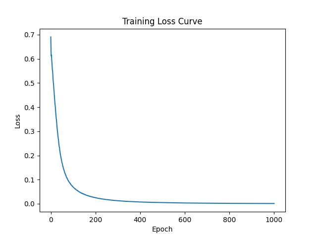
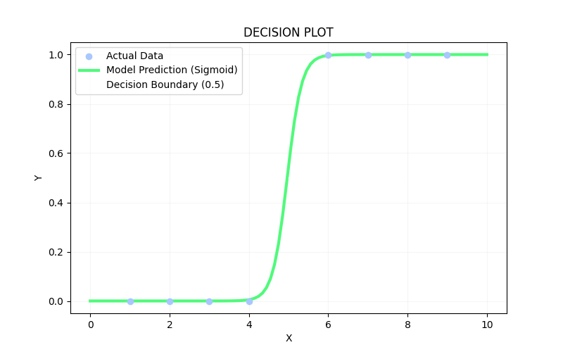

Moving from raw memory loading to industrial, scalable data engineering. Introducing data slicing pipelines to handle training workloads efficiently without choking local system memory.
x and y tensors securely inside a custom, structured PyTorch Dataset class.DataLoader to feed data into the model in distinct chunks of 4 samples rather than dumping the whole dataset at once.shuffle=True to automatically randomize sample grouping and sequencing at the start of every single epoch.5.0, resulting in an incredibly confident PASS prediction.The optimization curve showed an incredibly aggressive, steeper drop at the start compared to Day 5, followed by a slight geometric slowdown right around the 0.2 error mark. Because the model updates its weights multiple times per epoch (once for each mini-batch), it converges and stabilizes much faster. The final classification boundary stayed clean, splitting the passing and failing zones right down the center.
📊 Mini-Batch Optimization Track (Avg Loss: 0.001080):

🔮 The Shuffled Map (Sigmoid Decision Boundary):
